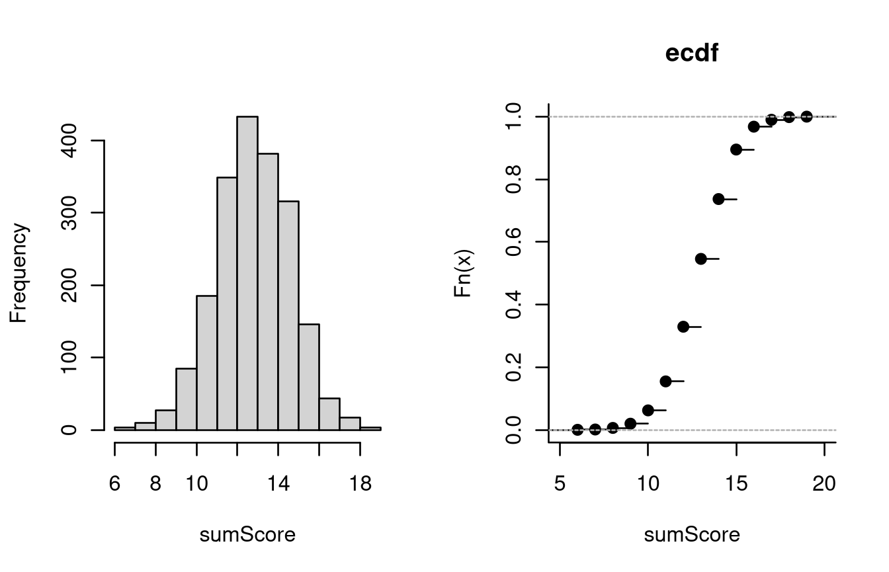
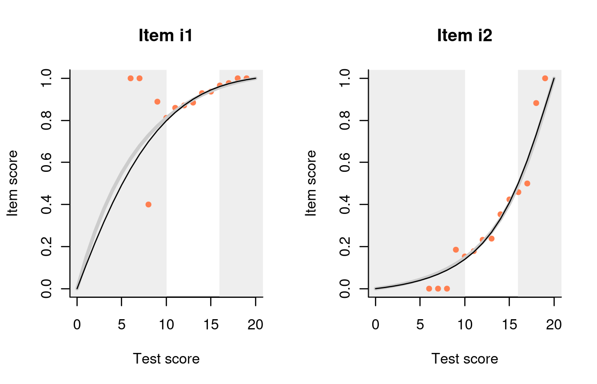
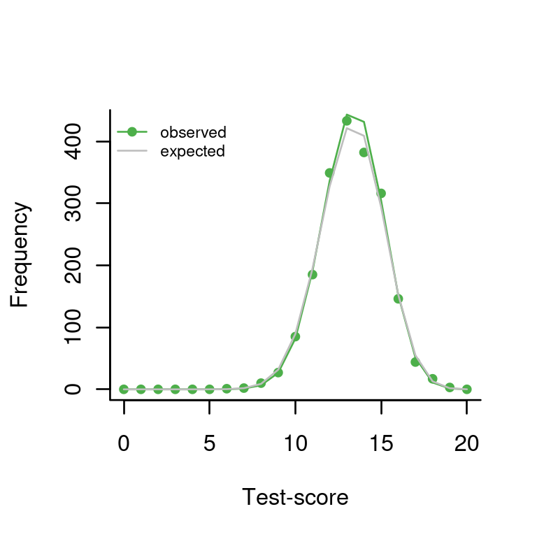

One theta to rule them all: Test Individual Differences
Timo Bechger and Ivailo Partchev
15 December, 2023
Source:vignettes/Test_Individual_differences.Rmd
Test_Individual_differences.RmdEducational and psychological testing is all about individual differences. Using a measuring instrument, we try our best to place an individual with respect to others depending on their level of extroversion, depression, or mastery of English.
What if there are no individual differences at all? Classical test
theory defines reliability as the ratio of the variance of the true
scores to the variance of the observed scores (e.g., Bechger et al. 2003). The observed scores
will have some chance variance, so reliability is 0 in that case. We
have provided an IRT analogue with function
individual_differences, to check whether the response data
are consistent with the hypothesis of no individual differences in true
ability.
First, we simulate a matrix of response data from the Rasch model. We simulate responses to 20 items with uniformly distributed difficulties for 2000 persons having all the same true ability of 0.5:
items = tibble(item_id=paste0('i',1:20), item_score=1, delta=runif(20, -2, 2))
sim_Rasch = r_score(items)
theta = rep(0.5, 2000)
simulated = sim_Rasch(theta)Computing the sum scores and examining their distribution, we find nothing conspicuous:
hist(rowSums(simulated), main='', xlab='sumScore')
plot(ecdf(rowSums(simulated)), bty='l', main='ecdf', xlab='sumScore' )
We can also examine the various item-total regressions produced by
function fit_inter. For example, here are the plots for the
first two items:

The curtains that eliminate the 5% smallest and 5% largest sum scores
are drawn somewhat narrow but, apart from that, all regressions look
nice. It appears that, by just looking at the response data, we are not
in a very good position to judge whether there are any true individual
differences in ability. To help with that, dexter offers a function,
individual_differences:
dd = individual_differences(simulated)
plot(dd)
The gray line shows the predicted frequency of each sum score under the hypothesis of no true individual differences. The green dots show the observed frequencies and it will be clear that our observed data is compatible with the null hypothesis.
The print function for the test shows a chi-squared test for the null hypothesis. Note that this uses R’s option to simulate the p-value, which explains why the degrees of freedom are missing:
dd## Chi-Square Test for the hypothesis that respondents differ in ability:
##
## Chi-squared test for given probabilities with simulated p-value (based
## on 2000 replicates)
##
## data: observed
## X-squared = 8.2505, df = NA, p-value = 0.8916Thus, we find a p-value of 0.89 for the hypothesis that there are no individual differences.
What about real data? Dexter comes with a well-known example preinstalled, the verbal aggression data (Vansteelandt 2000) analysed in great detail in (Paul De Boeck 2004) and many others. 243 females and 73 males have answered on a 3-point scale (‘yes’, ‘perhaps’, or ‘no’) how likely they are to become verbally aggressive in four different frustrating situations
db = start_new_project(verbAggrRules, ":memory:")
add_booklet(db, verbAggrData, "data")
dd = individual_differences(db, booklet_id=="data")
plot(dd)
This is quite different now, and the chi-squared test is highly significant.
dd## Chi-Square Test for the hypothesis that respondents differ in ability:
##
## Chi-squared test for given probabilities with simulated p-value (based
## on 2000 replicates)
##
## data: observed
## X-squared = 1.6144e+21, df = NA, p-value = 0.0004998